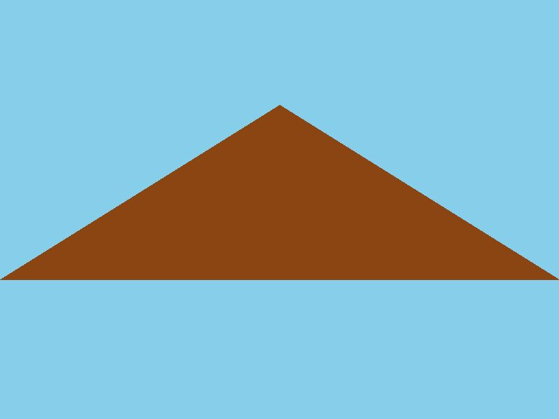

GLACIER NATIONAL PARK
GLACIER NATIONAL PARK
Glacier Park Lodge
United States
TRIP OVERVIEW
Day 1 – Going-to-the-Sun Road · Lake McDonald · Avalanche Lake · Logan Pass · Hidden Lake Overlook
Day 2 – Many Glacier · Grinnell Glacier · Iceberg Lake · Cracker Lake
Day 1
🏨 From Hotel: 🚙 30 min → Lake McDonald
1.Lake McDonald
↳ The largest lake in Glacier National Park, stretching 10 miles through the western valleys with dense cedar forests lining the shore. The turquoise waters reflect the surrounding peaks, and pull-offs along the road offer excellent photography angles of the mountain backdrop.

🚶 2 min · 🚕 5 min → Trail of the Cedars
2.Trail of the Cedars · Avalanche Gorge
↳ A 1-mile wheelchair-accessible boardwalk loop through old-growth western red cedar forest, descending to Avalanche Gorge where Cedar Creek has carved a narrow canyon with 100-foot walls. Mostly flat, 30 minutes round-trip. Cathedral-like canopy and cascading water throughout.

🚶 10 min · 🚕 8 min → Avalanche Lake Trailhead
3.Avalanche Lake
↳ A popular hiking destination with two options: a 1-mile flat boardwalk through wildflower meadows, or the full 5.9-mile round-trip to an alpine lake ringed by 2,000-foot cliff walls and waterfalls. The basin reflects granite peaks, creating a dramatic cirque landscape.
🏛️ Open daily dawn to dusk
⏰ 1 hr 30 min to 2 hr 30 min
📊 Elevation gain: 757 ft

🚙 30 min → Logan Pass
4.Logan Pass
↳ The highest point on Going-to-the-Sun Road at 6,646 feet atop the Continental Divide. The visitor center orients visitors to geology and ecology. Clear days reveal dozens of peaks across the alpine terrain. Access point to the Highline Trail and other high-elevation routes.
🏛️ Daily 9am–6pm · Seasonal closures apply
⏰ ~45 min
ℹ️ Parking reservations required July 1–Sept 30; $1 fee on recreation.gov
🚶 2.7 mi RT · 🚕 2 min → Hidden Lake Overlook Trailhead
5.Hidden Lake Overlook
↳ A 2.7-mile round-trip moderate hike ascending 551 feet to a raised overlook with views into Hidden Lake basin and across to Mount Jackson. Mountain goats frequently spotted on exposed alpine ridges. Wildflower meadows bloom July–August with expanding Continental Divide vistas throughout.
🏛️ Open daily dawn to dusk · Seasonal snow closures
⏰ 1 hr 30 min
📊 2.7 mi RT · 551 ft gain · Moderate
⚠️ Exposed alpine terrain; mountain goats may approach — do not feed or approach

🚙 30 min → Hotel
Day 2
🏨 From Hotel: 🚙 35 min → Many Glacier Area
1.Swiftcurrent Lake
↳ A pristine alpine lake in Many Glacier valley surrounded by 3,000-foot peaks and hanging glaciers. Turquoise water reflects Mount Cleveland and Mount Jackson. Boat shuttles reduce hiking distance to upper lakes and glaciers; shoreline walks provide easier trail access.
🏛️ Open daily dawn to dusk
⏰ 30 min
🚤 Boat shuttles daily 7am–5pm · Seasonal schedule
Choose one: Grinnell Glacier · Iceberg Lake · or Cracker Lake
2a.Grinnell Glacier Trail
↳ The flagship Many Glacier hike climbing 2,047 feet over 10 miles to a receding glacier at a pristine cirque lake. Route traverses multiple lakes—Swiftcurrent, Lake Josephine, Grinnell Lake—with boat shuttles available for lower sections, reducing the hike to 7.6 miles. Trail passes cascading waterfalls revealing successive glacial landscape layers, ending at the glacier's turquoise meltwater lake.
🏛️ Open daily dawn to dusk · Snow closures typical before July
⏰ 4–6 hr · Reduced to 3–5 hr with boat shuttles
📊 10 mi RT · 2,047 ft gain · Hard
🚤 Boat shuttle $15 per leg · recreation.gov

2b.Iceberg Lake Trail
↳ An accessible high-alpine option climbing 1,200 feet over 9.6 miles to a pristine lake where icebergs float year-round in summer, calved from the glacier above. Trail traverses subalpine forest and wildflower meadows with views of Mount Wilbur and Mount Jackson. Turquoise waters and surrounding 3,000-foot peaks create a dramatic final basin.
🏛️ Open daily dawn to dusk · Snow closures typical before mid-July
⏰ 4–5 hr
📊 9.6 mi RT · 1,200 ft gain · Moderate-Hard
2c.Cracker Lake Trail
↳ A less-crowded alternative with equal scenic reward, climbing 1,400 feet over 12.4 miles to a brilliant turquoise lake beneath Mount Siyeh. Trail passes through forest and subalpine terrain, emerging into an open basin with cascading streams and hanging glacier visible on the mountainside. Wildlife sightings are common; the remote feel rewards the longer approach.
🏛️ Open daily dawn to dusk · Snow closures typical before mid-July
⏰ 5–6 hr
📊 12.4 mi RT · 1,400 ft gain · Hard

🚙 35 min → Hotel
🚗 Personal Vehicle
The most practical way to explore the park. Standard $35 entrance pass per vehicle, valid for 7 days. Going-to-the-Sun Road is 50 miles one-way and takes 2 hours without stops; plan 6–8 hours with scenic pulloffs and a hike. Road opens mid-June through early October, depending on snow. Drive carefully on mountain sections; RVs and trailers over 21 feet are prohibited on Going-to-the-Sun Road between Avalanche Campground and Sun Point.
🚌 Shuttle Services
Free shuttle buses run along Going-to-the-Sun Road and throughout the park during peak season: July–early September. Shuttles connect key trailheads and reduce driving stress on narrow mountain sections. Download the park map for current shuttle routes and schedules.
🥾 Guided Tours
Half-day and full-day guided hikes are offered through concessionaires; advance booking recommended during July–August. Ranger-led programs focus on geology, ecology, and wildlife and are available daily at various locations throughout the park (free with entrance pass).
Glacier Park Lodge Restaurant
The lodge's full-service dining room serves breakfast, lunch, and dinner with mountain views. Entrées emphasize Montana beef and seasonal fare. Reservations recommended for dinner during peak season.
Lake McDonald Lodge
Historic property offering dinner service with views of Lake McDonald. The dining room captures the rustic elegance of early 20th-century park hospitality. Casual to dressy options available.
Many Glacier Hotel
Located in the Many Glacier valley, this historic lodge serves dinner in a grand dining room overlooking Swiftcurrent Lake. A destination dining experience even for day-trippers not staying overnight.
Going-to-the-Sun Road
The iconic 50-mile highway crossing Glacier's spine from west to east, climbing 3,600 feet from Lake McDonald to Logan Pass. Hairpin turns, dramatic gorges, and panoramic vistas of the Continental Divide make this one of America's most scenic drives. Drive early morning to avoid crowds and secure parking at major pulloffs. One-way driving time: 2 hours without stops.
Many Glacier Road
A 12-mile spur road from the eastern approach near Babb climbing into Many Glacier valley. Switchbacks ascend through wildflower meadows and subalpine forest with views of Mount Cleveland, the park's highest peak. Road quality is good but narrow; drive slowly and watch for wildlife. A scenic alternative if Going-to-the-Sun Road is not yet open.
Two Medicine Road
A 7-mile spur off Highway 2 leading to Two Medicine Lake, a turquoise alpine lake ringed by 3,000-foot peaks. Less crowded than Many Glacier, offering excellent hikes to Twin Falls and Paintbrush Lake with similar scenic reward.
🦌 Common Species
Glacier is known for frequent sightings of mountain goats, bighorn sheep, mule deer, and elk. Moose inhabit the lower forest valleys. Black bears are present—always carry bear spray on hikes and store food in bear canisters at campsites. Grizzly bears roam the backcountry but rarely approach trails.
🦅 Birdwatching
Bald and golden eagles are seen overhead, particularly near water. Ptarmigan change from brown in summer to white in winter and are visible on high ridges. Varied thrushes, gray jays, and Steller's jays are common forest residents. Peak seasons: May–June for breeding, September–October for migration.
⏰ Best Viewing Times
Dawn and dusk offer the highest encounter probability. Morning wildlife drives along Going-to-the-Sun Road from 6am–10am often yield mountain goat sightings on cliff faces above the road. Stay on trails, maintain distance: 25 feet minimum for most wildlife, 100 feet for bears. Never approach young animals.
📅 Guided Walks
Free ranger-led walks depart daily from major trailheads and visitor centers. Topics include geology, ecology, wildlife, and park history. Half-day and full-day guided hikes available through concessionaires. Duration: 1–2 hours. No reservations needed; meet at posted times · check visitor center bulletin boards or ask at the lodge.
📅 Evening Campfire Programs
Ranger presentations held nightly at Many Glacier, Lake McDonald, St. Mary, and Apgar campgrounds during peak season. Programs cover bears, glaciers, trail safety, and indigenous history. Free and family-friendly · typically 8pm–9pm · schedule varies by location.
👨🎓 Junior Ranger Program
Children ages 6–12 can participate in the Glacier Explorer badge program, earning badges through activities, hikes, and ranger interactions. Badge workbooks available at any visitor center for a small fee.